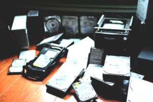
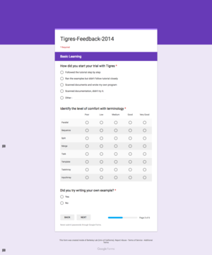

Lavanya Ramakrishnan, Daniel Gunter, Deborah Agarwal Data Science and Technology Department, Lawrence Berkeley National Lab. September 2016
Computer scientists often focus on the problem that they are interested in, which might be a longer-term outlook. However, a good science engagement strategy will solve the right problem, the one is affecting the users today, first.
Example: In a science engagement with one of the science facilities, we were focused on learning their long term data problems. However, the user had a complex system of managing data on external hard disks and was running out of space and needed that problem solved first.

Image courtesy Dula Parkinson, LBNL
It is important to understand the user's motivation to participate in the science engagement - what do they want to change and why do they want it. Understanding a user's motivations for the engagement is a good indicator of their time investment in the project and also willingness for change.
Example: Many of us have seen screenshots similar to these where people have complex processes to manage the software and scripts and data from their simulations and effectively have metadata and provenance in file names. A user who has growing volumes of data might be motivated to change this status quo whereas a user who doesn't have any challenges right now may not care to change the complex yet working system.
It is important to understand the context of use of the system to be designed. For example, if we don't know where and how the scientists are collecting the data, the system we build probably won't be useful.
Example: Knowing that data would be collected in the field in fairly difficult physical conditions changes the design of not just the mobile interface but also the backend that would support the data entry on sometimes spotty wireless signals.
Image courtesy the AmeriFlux project
We often struggle with dealing with the chaos of conflicting user requirements including - "what do they actually mean?" User research processes enable you to work through these requirements to come up with solid recommendations and priorities.
Example: One such method that we have used is detailed [here] (http://lbl-udablog.blogspot.com/2015/12/evaluating-proposed-capabilities-to-be_1.html,"UDABlog")
It is critical to test how an user will interact with a system before even building the system, and subsequently with early prototypes. Usability studies provide a methodology to conduct and learn from these tests. Traditionally, the methodology has been used for web interfaces but we have experimented with using the methods for APIs and found it tremendously useful. A good book on the topic and our paper that details the methodology we used for APIs
We did a "paper prototype" usability for an API, to get feedback from our user on nomenclature and understand what our users valued the most. After developing a product, we performed a second round of usability study -- this time, to study the effectiveness of using the API more thoroughly, and over a longer time period.
REMOVE THIS PIC? 
User interfaces need to be an essential part of system design and needs to capture the user's mental model. A clean user interface added at the end cannot make up for bad design. Also, a bad user interface can affect a good design.
We found in one case that users preferred a file level UI better since it captured their mental model than a UI that was clean but didn't capture their mental model of the data layout.
It is important to identify who the users of the system are and build for them. "What would I do?" may be extremely misleading, if you are not representative of the end user. You have to continually ask yourself whether you are really modeling a real user, or just targeting someone who is convenient for you to think about (like yourself!).
For example, in a research project, we discovered that since the tool was initially built for experimentation purposes by computer scientists, there was no clear mechanism provided to access the output data from the runs. When the tool started getting used by science users, this was a hurdle and needed to be fixed.
When computer engineers think about porting codes to HPC, they tend to think about performance of the codes. This is only one part of the picture. When we talked to users, they consistently worried about their own time -- time waiting to run, time debugging, etc. -- as the primary metric. If running on HPC is wasting too much of their time, performance gains of the code itself are not very important. Productivity, publication deadlines, etc. are often the user's metrics and needs to be taken into account when designing the system.
developement team
It is important to remember that the cost/benefit analyses that a science team might do is often different from the analyses that a development team might do. For example, a development team might be willing to invest in performance improvements in the code. However, the time investment in this might not look beneficial to the scientist if it does not improve the science result in some way.
It is important to be willing to iterate and engage the users early and often. It is critical that developers don't get attached to their designs and are willing to pivot the development process. The Lean Startup book discusses some of the topics that are relavant in the development cycle.